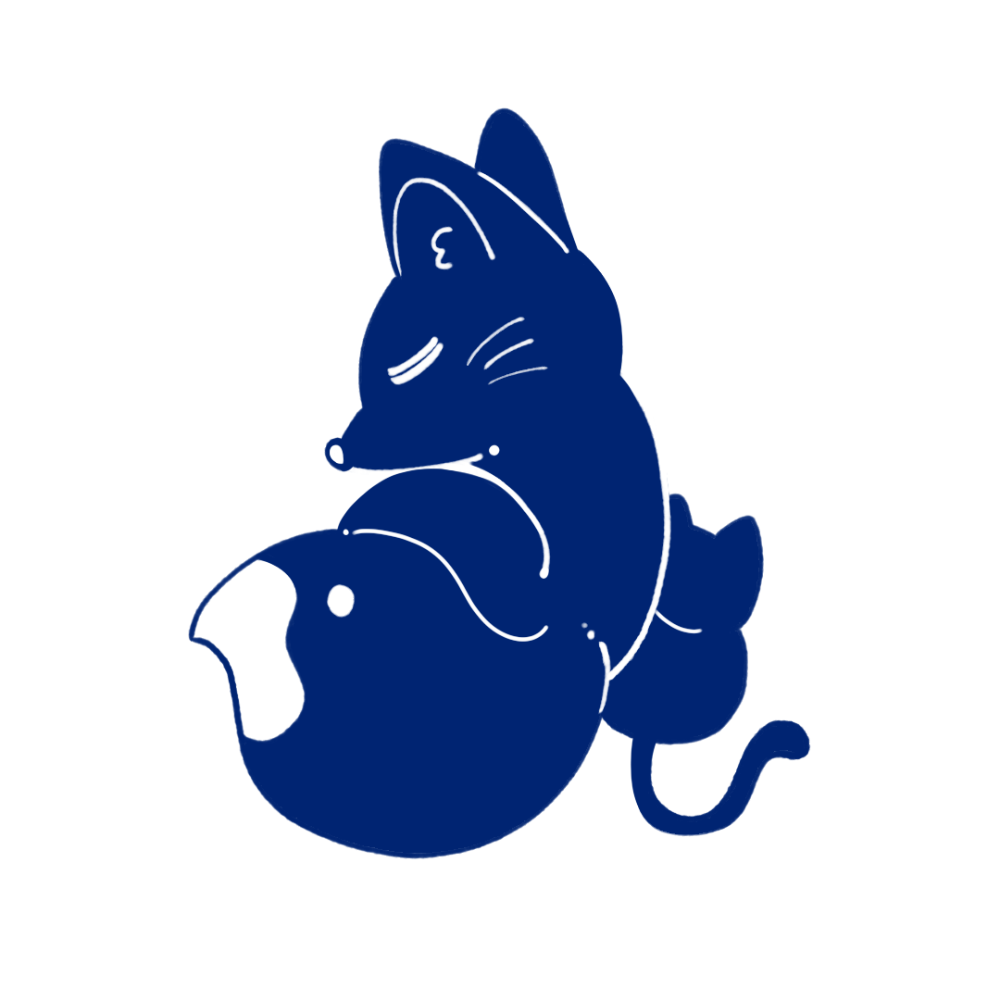
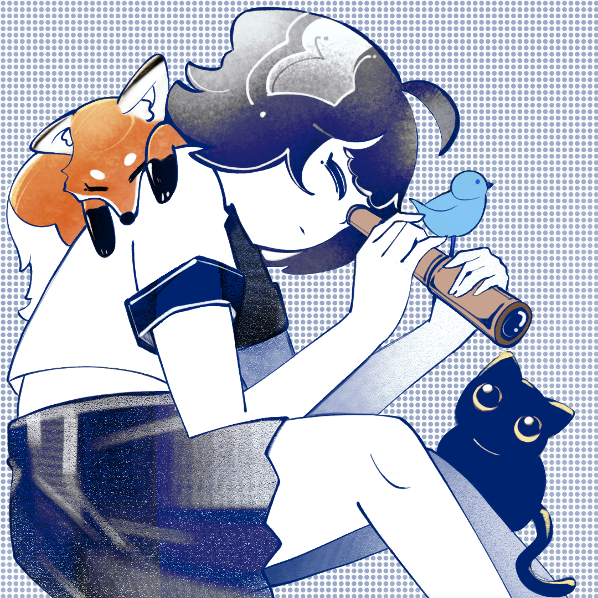

Personal Profolio
▌ 00%
HOME
ABOUT ME
WORKS
EN

Personal Profolio
Milk Tea Lover
INTERACTION DESIGNER · NTUT
互動裝置 / 生成式藝術 / 網頁藝術 / VR /AR / 動畫 / 電繪
M
Y
W
O
R
K
S
▼
▼
▼
01
07
有人說互動設計就是當哆啦A夢，我想是的。
01

＞ INTRO
— Tong
02
互動裝置
前端網頁
動畫製作
平面與手繪
TouchDesigner
Unity
Arduino
Mediapipe
p5.js
HTML
CSS
JavaScript
Gsap
Pixi.js
After Effects
Premiere
Spine
Live 2D
Illustrator
Photoshop
Procreate
Handrawing
近期動態
RECENT UPDATES
2026
近期動態
ALL UPDATES · 2026
1 UPDATE
ESC 關閉
Interaction Design
Animation & Digital Art
Static artwork
Interaction Design
▼
Interaction Design
Animation & Digital Art
Static artwork